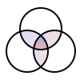
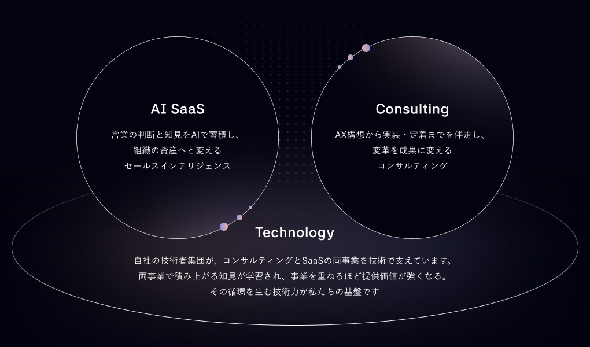

営業AIエージェント
STRIX
商談後の記録やCRM入力を自動化しながら、案件リスクや組織の知見を先読みして提示するAIエージェント。営業の意思決定を「見える化」し、戦略立案から個別アカウントの打ち手まで一気通貫で支援します。
サービスサイトへ会社概要
Mission
価値あるものが埋もれず、必要とする買い手のもとへ届く。
その積み重ねが、産業が育ち続ける土壌になると信じています。
Vision
「誰が・何に・なぜ価値を感じるのか」を、組織の知として可視化する。
情報の非対称をなくし、売り手と買い手が同じ景色を見て合意できる状態をつくります。
Value
理念を絵に描いた餅で終わらせないために、日々の仕事に落とし込んだ行動基準。
一人ひとりがこの4つを体現し、すべての起点に顧客を置くことから、私たちの価値は生まれます。
顧客の成功に、執着せよ

顧客のための「正解」をつくれ
憶測せず、顧客に聞け
卓越性をもって先導する
事業内容
営業活動にひそむ「不透明」をなくし、売り手と買い手の「価値」を合致させる。
私たちMEDIUMは、産業が強く育つための循環を、その真ん中（Medium）からつくります。

サービス
営業AIエージェント
商談後の記録やCRM入力を自動化しながら、案件リスクや組織の知見を先読みして提示するAIエージェント。営業の意思決定を「見える化」し、戦略立案から個別アカウントの打ち手まで一気通貫で支援します。
サービスサイトへ役員紹介
代表取締役
慶應義塾大学卒業後、三越伊勢丹ホールディングス
IT戦略部にてキャリアをスタート。ベイカレントコンサルティングでの経験を経て、AI系ベンチャー企業にて執行役員を務める。
その後、営業戦略に特化したコンサルティングファーム「MEDIUM」を創業。現在は、営業戦略・アカウント戦略支援を目的とするサービス「STRIX」の事業開発に従事している。
取締役 CTO
京都大学および同大学院工学研究科修了。卒業後、ソフトウェアエンジニアとしてAIベンチャーにて研究開発およびAIサービスの立ち上げをリード。運輸・旅行・製造業を中心としたエンタープライズ企業向けに、データ駆動型の意思決定支援システム設計・実装・導入支援を多数手がける。
その後「MEDIUM」に参画し「STRIX」の開発責任者を務める。
会社概要